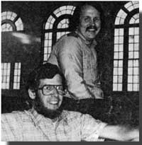
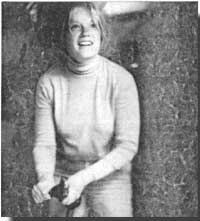

Six years ago Gary Gunderson and Andy Loving set up shop in Decatur, Georgia's Oakhurst Baptist Church ... and put together the first issue of a newsletter devoted to calling attention to the problem of world hunger. Since then, Seeds has grown into a bi-monthly magazine, which informs its 3,300 subscribers about the plight of underand malnourished people ... both in rural and innercity areas of America and in other countries.
The goal of the publication-which recently won a World Hunger Media Award for an edition that underscored the role of women in feeding the earth's people-has been to present information that could lead to practical solutions. Articles have featured such topics as how to start food coops and how to promote political action on the local and national levels (indeed, the magazine keeps a close watch on how our country's legislators vote on hunger-related issues).
Today, the journal's staff numbers six ... with costs paid by a $9,000 annual allowance from the church, a sideline typesetting business, individual contributions, and $10-per-year subscriptions (write to Seeds, Dept. TMEN, 222 East Lake Drive, Decatur, Georgia 30030). But the creators of Seeds ask more than money from their readers. "We're trying to plant seeds in people's minds and hearts," says Andy. "Hunger," adds Gary, "is caused by what people do to people, and not just by what nature does to people."-JV.
Last September, Ivan Martin made farm history ... when he became the first Lancaster County, Pennsylvania property owner to insert a provision in the deed to his farm requiring that the land be kept in agricultural use "in perpetuity". Under the agreement, which was signed between Martin and the county, the restriction stays in effect unless and until both parties decide to break the partnership.
About two years ago, you see, officials in Lancaster County (one of the country's top nonirrigated farm districts) decided to set up a program to help put a stop to the area's estimated 3,000- acre-per- year loss in farmland (a result of residential and commercial development). The county's Agricultural Preserve Board has since worked to interest municipal leaders in writing zoning laws beneficial to farmers, and was responsible for conducting the educational campaign that convinced Martin to include the landuse restriction in his deed.
Though the provision allows each participating property owner to take a federal tax deduction based on the difference between the market value and farm value of the acreage in question (since land sold for development generally fetches a higher price than does property sold for farming) , Mar tin has refused to take advantage of the tax break. "Preventing the destruction of farmland is what I should be doing," says Ivan. "I don't want the money. I want to set an example."- Ed Klimuska.
When fleecing time rolls around, a lot of Minnesota sheep raisers hire Angela Maas to do the job. Angela is one of the few shearers who'll come out to a farm to work on a handful of animals, and she's fast building a reputation for the patience and skill with which she performs her task.
While still in her teens, Angela became a proficient spinner/weaver and acquired a working knowledge of sheep production and wool selection ... with help from her friends John and Judy Lewman, who own Spring Creek Farm (a family-run business that supplies products for handspinners). Then Angela turned her attention to shearing, and was fortunate enough to train under the farm's expert clipper, "Pistol Pete" Ordorff, who's practiced his trade for more than 55 years. Under Pete's instruction, Angela learned to fleece with a mini mum of second cutting (going over the same area twice, an act that produces small tufts of wool which ruin the product for handspinners) and without lacerating the animals' skin.
After serving a three-year apprenticeship, Angela hung out her own shingle and began to prove her ability as an independent shearer. Her prices start at $1.50 per head, depending on the number of sheep and the amount of travel time involved ... and the fleecing takes upward of three minutes per animal (Angela once spent more than eight hours shearing eleven sheep... because their wool was full of clay dust that kept dulling the blades of her clipper).
Earning recognition as an accomplished fleecer is usually a slow process-since shearing is done only once (or maybe twice) a year-but Minnesota's sheep raisers are rapidly coming to appreciate the skills of Angela Maas.-Andy Hjelmeland.
PAMELA SUE MARTIN (who plays the part of Fallon Carrington on television's Dynasty) has traveled to Newfoundland and appeared on U.S. talk shows on behalf of the environmental group Greenpeace. She has devoted her time to the protest of such long-standing Greenpeace targets as nuclear power and the annual harp seal harvest.
Leesburg, Florida citrus grower LEE MCCOMB farms one of the largest organic groves in the Sunshine State... tending 65 acres of fruit without the use of chemicals. Though most of Florida's agriculturists opine that chemical-free farming cannot be profitable, Lee has managed to surpass the average 400-box-per-acre statewide grapefruit yield of recent years ... harvesting as many as 600 boxes of fruit per acre from some parts of his orchard.
Prominent antinuclear activist DR. HELEN CALDICOTT (see issue 56, page 110 and issue 58, page 114) has founded an organization called Women's Action for Nuclear Disarmament (WAND). Members will focus their efforts on political action ... endorsing candidates, working to pass nuclear-freeze referendums, and lobbying prior to critical votes in Congress. For information write WAND, Dept. TMEN, P.O. Box 153, New Town Branch, Boston, Massachusetts 02258.
When JERRY KALUHIWA realized that the seaweed in Honolulu's Kaneohe Bay had been all but stripped by foragers, he began a volunteer program to replenish the underwater crop. Kaluhiwa and his helpers took charge of a one-acre plot, where they plant and tend seedlings of the Hawaiian delicacy. "We want to regenerate and preserve a badly depleted ocean resource that was once a common food source in the area," says Jerry.
A colorful 700-foot-long procession of piggyback trailers, decorated with wildlife murals that urged the protection of endangered species, made the Santa Fe Railway Chicago-Los Angeles run last February. The mural trailers were commissioned by JERRY G. CHAMBERS, the founder and chairman of a Chicago-based freightforwarding firm called Clipper Exxpress Company-JV.
|
 |
 |
|